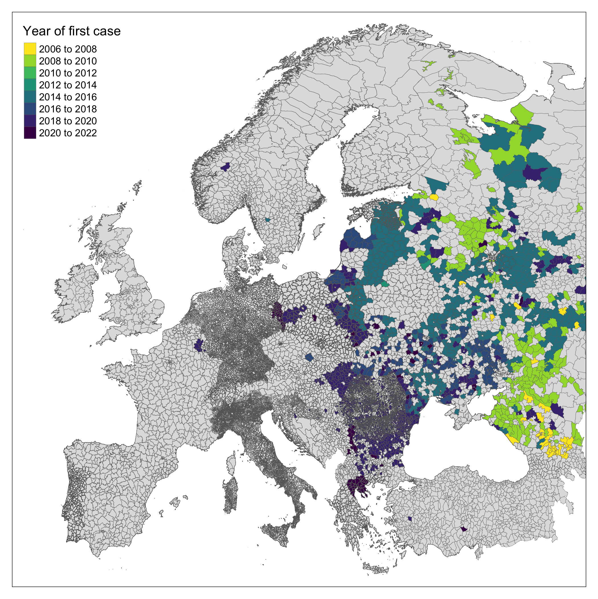
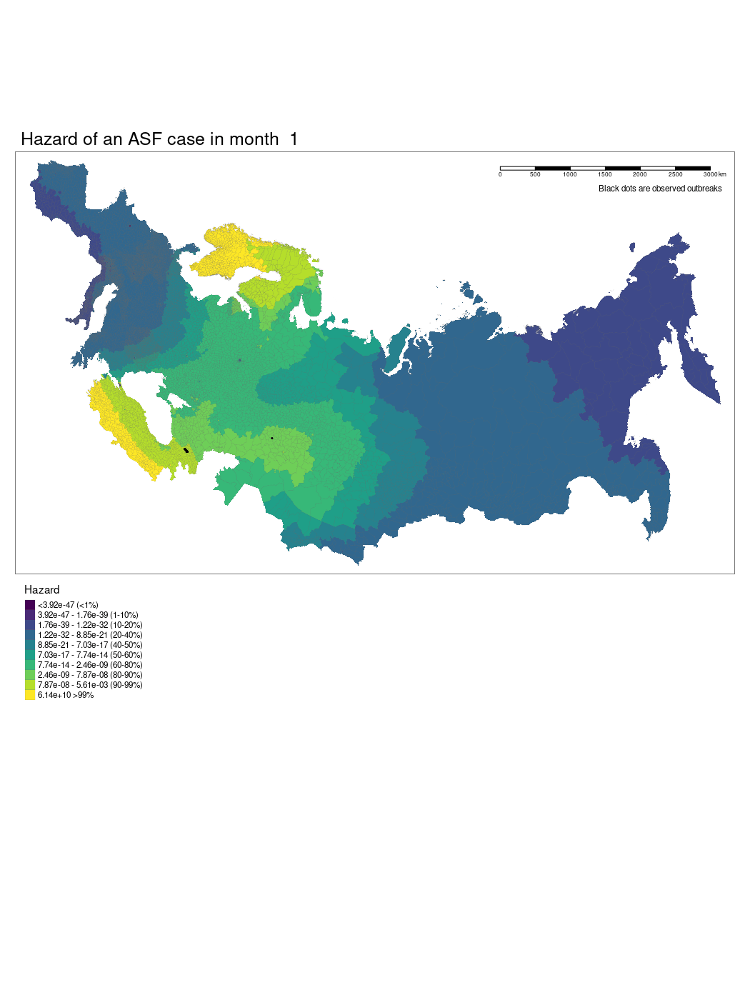

Modelling range expansion of the emerging African Swine Flu epidemic.
African Swine Fever (ASF), caused by the large double-stranded DNA African swine fever virus (Asfaviridae) is a highly transmissible acute haemorrhagic fever causing high mortality in domestic pigs and wild boar. The virus is endemic in most sub-Saharan African countries, maintained in wild animal reservoirs. Warthogs (i.e. Phacochoerus africanus) are the primary reservoir species and do not show clinical disease. ASF was first reported outside of Africa and the Indian Ocean islands in 1957 from Portugal. Following the introduction of the disease into Portugal and its subsequent establishment in the Iberian peninsula it remained endemic until local eradication in the mid 1990’s. Transmission was found to be sustained through the involvement of a tick vector (Ornithodoros erraticus). ASF has subsequently been introduced to South America, the Caribbean and Asia.
ONGOING WORK
Introduction
Following introduction of ASF to Georgia in 2007 an ongoing epidemic is being reported by Russia and other East- and Central-European countries (Chenais et al. 2018). Over the last 14 years the invasion front of ASF has progressed West despite significant attempts (i.e. active and passive surveillance, mandatory reporting, animal culls) to arrest the geographic expansion of the outbreak (European Food Safety Authority (EFSA) et al. 2021). In July 2021, infected domestic pigs were reported in Eastern Germany in the buffer zone along the border with Poland for the first time (ProMED 2021).
ASF is introduced to farmed pig populations through several mechanisms. First, contamination of animal feedstocks with infected pig meat products (as was implicated in Portugal in 1957), can result in human driven transmission of disease (Sur 2019). Second, viral spillover from infected wild animals (e.g. warthogs, boar) into farmed pigs - particularly in settings of low biosecurity - including those in “backyard” pig farms. Third, arthropod vector driven transmission, the discovery of vector competence of soft-bodied Ornithodoros ticks increases risk of transmission where wild animals, vectors and domestic pigs distributions overlap (Costard et al. 2009).
The speed of the ASF invasion front across Europe depends on the interplay between these transmission methods and environmental factors (Gervasi and Guberti 2021). For example, maintenance within a wild population is affected by environmental degradation of wild animal corpses following ASF mortality, colder weather results in contaminated material persisting in a geographic location for a longer period of time (Carlson et al. 2020). Human activity through infrastructure networks, hunting activity and pig cultivation are further associated with ASF spread (Oļševskis et al. 2020). Current estimates for the rate of spread of ASF through wild boar populations range from 3km/month to 11km/month predominantly based on land classification (Podgórski, Apollonio, and Keuling 2018). Estimates of spread of the invasion front are complicated by translocation of the disease by human activity (i.e. transport of infected pigs or pig products) and unobserved spread. In 2018 infected wild boars were found in Belgium, over 500km from the nearest affected region, phylogenetic investigation identified cases from the Baltic states as being the closest viral relatives (Garigliany et al. 2019). Further, increased wild boar populations in urban and peri-urban settings across Europe can increase contact rates between this potential wild reservoir and humans with increased risk of human vectored ASF transmission (Mwiine et al. 2019).
Here, we explore ASF spread through contiguous regions of mainland Europe as a non-linear spatial process using Generalised Additive Models (GAMs) to identify properties that may lead to an increased or decreased rate of spread. Characterising the invasion front in this way may allow early identification of regions at greatest or imminent risk of emergent cases. To achieve this we use the OIE WAHIS database of reported outbreaks to model the changing hazard of infection in European regions. These geographically and temporally altering hazards inform a model of speed of pathogen spread across these landscapes. Finally we predict expansion of the invasion front using these methods to currently uninfected regions of Central Europe.
Methods
ASF case data
ASF is a listed disease and therefore notifiable to the World Organisation for Animal Health (OIE) who maintain an open repository of reports contributed by member countries on the World Animal Health Information System (WAHIS). We use a previously developed API to collate these reports and describe the current extent of ASF in the study region (World Organisation for Animal Health 2021). ASF case notifications up to October 2021 were obtained and grouped by geographically defined outbreaks. We retained the first notified case in wild boar (species name) and domesticated pigs (species name) in each administrative region for the subsequent analysis. We used month as our temporal unit of analysis throughout, therefore, outbreaks were identified to their month.

Geographic units of analysis
We obtained shapefiles for level 3 administrative area from 11 European countries (Albania, Belgium, Bosnia-Herzegovina, Finland, France, Estonia, Germany, Greece, Italy, Poland and Spain), level 2 administrative areas from 25 European countries (Austria, Bulgaria, Belarus, Croatia, Czechia, Denmark, Georgia, Hungary, Kosovo, Lithuania, Luxembourg, Latvia, The Netherlands, Norway, Portugal, Romania, Russia, Serbia, Slovakia, Slovenia, Sweden, Turkey, Ukraine and Switzerland) and level 1 administrative areas for 6 countries (Andorra, Armenia, Liechtenstein, Moldova, Montenegro and North Macedonia). All shapefiles were accessed through the Database of Global Administrative Areas (GADM). The selection of level of administrative area used was based on data on data availability (not all countries use level 3 administrative areas) and feasibility. We removed Eastern Russia from the study area due to an outbreak of ASF in East Asia during the study period which introduced confounding through spillover of cases into the region from China and North Korea.
Covariates
We selected a priori covariates of interest based on a review of the available literature and a conceptual model of ASF transmission within both wild and domesticed suids and the transmission between these two populations (Supplementary 1). We calculated the proportion of a countries GDP that was associated with pig production by obtaining the national pig population reported to FAOSTAT (Organisation for Economic Co-operation and Development and Food and Agriculture Organisation 2021) divided this by the countries Gross Domestic Product (GDP) to produce a pig/GDP ratio. We used two bioclimatic variables derived from the WorldClim dataset [ref], first, we used isothermality - a measure of how large the diurnal temperatures oscillate relative to annual oscillations - and second, we used annual precipitation. The median of these variables were calculated for the administrative area unit of analysis. We used land elevation as a further measure of abiotic factors, we obtained land elevation from the European Environment Agency and calculated the median elevation for each administrative area. We obtained landuse data from the European Space Agency Copernicus project and we extracted the modal land use category for each administrative region.
To include the distribution of pig populations across our study area we obtained global farmed pig populations from the Gridded Livestock of the World v3 (2018), areal-weighted data were used which calculates the density of animals per km^2 multiplied by the pixel area. We used these data to produce a median value for pig density per km^2 for each included administrative area. Unfortunately, similar estimates for boar populations did not cover the extent of our study area so we used boars presence data from the Global Biodiversity Information Facility data we used reported presence since 2005-01-01 as our cut-off. We designated administrative regions without a reported boar presence since 2005 as boar not present.
Finally, we included two measures of human impact on this system, first, median human population density was derived using the same approach as for pigs from Gridded Population of the World data. Second, a measure of human accessibility of “friction” was obtained from the Malaria Atlas Project, the median travel time to the nearest city for each administrative region was calculated, higher values represent less built-up regions that may be more suitable for maintaining both pig farming and wild boar populations.
Temporal analysis
We explored the changing hazard of outbreaks over the study period by creating time-to-event data for a region to report an ASF outbreak. We used a Piece-wise exponential additive model (PEMs) a special case of GAMs to report the cumulative hazard estimate of an outbreak in an administrative region (Bender, Groll, and Scheipl 2018). These models were constructed for each country that had reported an outbreak during the study period.
Spatial analysis
We used a GAM to model temporally and spatially varying hazards of an outbreak of ASF within an administrative region. The model used a soap film smooth for the spatio-temporal covariates to account for the geographic structure of the study region. We used thin plate regression splines for all other smoothed co-variates. The model was specified as follows:
\[ \text{Hazard of outbreak}_{monthly} \sim {\sf Poisson}({\sf te}((x_{1}, k) * (x_{1}, k)) + {\sf s}(x_{2}, k) + \cdots {\sf s}(x_{8}, k) + x_{9} + x_{10}) \]
Where x1 is the temporal (month) and spatial (longitude and latitude) soap smooth, x2 is the country random effect smooth, x3 is the isothermality smooth, x4 is the precipitation smooth, x5 is the landscape “friction” smooth, x6 is the human population density smooth, x7 is the pig population density smooth, x8 is the regional elevation smooth, x9 is the binary presence or absence of boar in a region, x10 is the categorical dominant land use type in a region. For the soap film smooth we generated the boundary as a contiguous border of mainland Europe and implemented x internal knots.
Results
We have produced a model which shows the changing hazard of ASF case detection across Europe. The model is still being worked on and there are several current limitations to our approach we hope we will be able to iron out.

References
Citation
@online{simons2022,
author = {David Simons and Noam Ross},
title = {Modelling Range Expansion of the Emerging {African} {Swine}
{Flu} Epidemic.},
date = {2022-11-01},
langid = {en},
abstract = {African Swine Fever (ASF), caused by the large
double-stranded DNA African swine fever virus (Asfaviridae) is a
highly transmissible acute haemorrhagic fever causing high mortality
in domestic pigs and wild boar. The virus is endemic in most
sub-Saharan African countries, maintained in wild animal reservoirs.
Warthogs (i.e. *Phacochoerus africanus*) are the primary reservoir
species and do not show clinical disease. ASF was first reported
outside of Africa and the Indian Ocean islands in 1957 from
Portugal. Following the introduction of the disease into Portugal
and its subsequent establishment in the Iberian peninsula it
remained endemic until local eradication in the mid 1990’s.
Transmission was found to be sustained through the involvement of a
tick vector (*Ornithodoros erraticus*). ASF has subsequently been
introduced to South America, the Caribbean and Asia.}
}